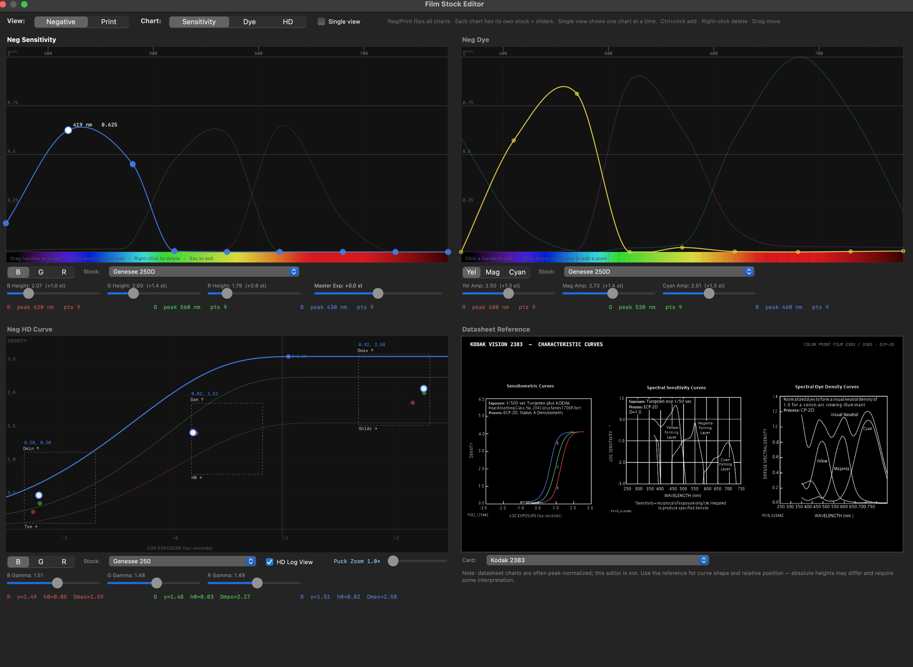
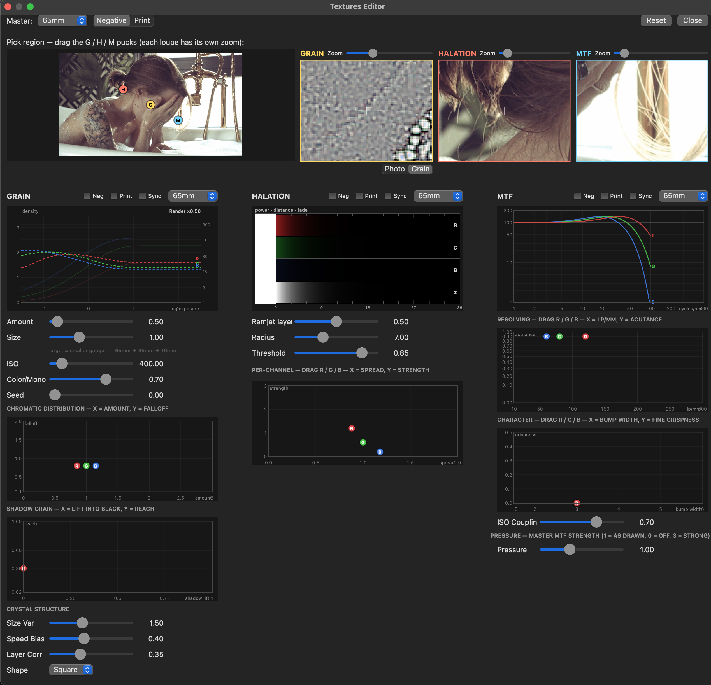

What PhotoChemist is
PhotoChemist is a physically-based, spectral simulation of the analog film photochemistry chain, running as a per-pixel OpenFX render inside DaVinci Resolve. It does not approximate the film look with a 3D LUT, an S-curve, or a channel-mixer matrix. Instead it reconstructs the actual chemical and optical events that happen when light exposes a negative, that negative is developed into subtractive cyan/magenta/yellow (CMY) dye, the negative is printed onto a print stock, and the print is shone through a projector bulb.
Internally it works in a 43-band spectral representation (360–780 nm at 10 nm steps): your image becomes spectra, those spectra drive real physical events, and only at the very ends does it return to RGB. The film look you want emerges from physics, overlapping curves talking to each other, rather than being baked into a fixed transfer.
The plugin ships as a bundle with two factories:
- PhotoChemist, the main film-emulation effect (this whole guide, except the feeder section).
- PhotoChemist Printer Lights, a companion generator/trim node that produces per-pixel printer-light maps, wired into PhotoChemist's optional Printer Link input. See that section.
Spectral, not a LUT, why it matters
A film-look LUT is a recording of an outcome. Someone shot a chart on a stock, scanned it, and froze the RGB-in → RGB-out relationship into a cube. It is fast and often looks good because the destination is real, but it is a photograph of a result, not the process that made it. A LUT only knows the one illuminant, one exposure, and one print condition it was baked under. Push outside that operating point and it has nothing to fall back on.
PhotoChemist simulates the chemistry instead, so the look re-derives whenever you change anything:
| LUT / curve emulation | PhotoChemist |
|---|---|
| Maps RGB → RGB through a fixed transfer | Maps RGB → spectrum → physical events → spectrum → RGB |
| The look is baked, static, single-illuminant | The look emerges from sensitivity curves, dye densities, H&D curves, printer lights |
| Channel crosstalk is faked with a matrix | Crosstalk is real, it falls out of spectral overlap of dye absorptions and layer sensitivities |
| Halation / grain / sharpness are post effects bolted on | They act in the physically correct space and pipeline order |
| Cannot answer "what if the print stock were different?" | Negative stock and print stock are independent spectral objects you can swap or edit |
Concretely: a red apple vs. skin tone
A red apple's reflected light is not "255 red", it is a spectral curve, mostly energy past ~600 nm with a long tail. PhotoChemist dots that spectrum against three layer sensitivities: the red-sensitive (cyan-forming) layer lights up hard, but green and blue sensitivity haven't fully died at those wavelengths, so they catch a little too. Skin is not "less apple", it is a broad, smooth reflectance with strong long-wavelength content plus real green energy and a notch in the blues. It loads all three layers in a completely different ratio, and the dyes that form overlap spectrally on the way back out (cyan dye absorbs into the greens, magenta bleeds toward red). That wavelength-specific overlap is the crosstalk, and it colors the apple and the skin differently even where their RGB would land close.
A 3D matrix or cube applies the same fixed cross-channel mixing to every pixel by its RGB address. It cannot know the apple and the skin arrived via different spectra. The spectral sim does, because it never collapsed to RGB in the middle. Shift a printer light or the print dye and both the apple and the skin re-derive correctly, with skin staying believable while saturated reds bloom the way real stock does.
The film chain, mapped to the controls
The full Neg to Print path, in plain language, with the control group that governs each step:
- Exposure, your RGB is converted to spectra and projected onto the negative's three spectral layer sensitivities, giving three real exposures. (Input Condition rescales the scene into the stock's exposure window first; Negative Film Stock defines the sensitivities.)
- Latent image, silver forms by the law
P = 1 − exp(−k·H)(exposureH, per-layer ratek). - Grain (pre-curve), grain is injected into the latent signal before the characteristic curve, in density space, because real grain is a property of the developed silver, not a post overlay. (Textures → Grain.)
- H&D characteristic curve, the latent fraction is shaped into dye concentration; this is the stock's contrast personality (toe, gamma, shoulder), run per layer. (Neg HD Curve.)
- Dye formation + spectral integration, the three layers drive subtractive CMY dye; densities combine via Beer–Lambert. (Negative dye colors.)
- Developer competition / interimage, real cross-channel coupling from shared developer. (Film Development → Negative.)
- Negative halation, bright sources bloom around themselves, in density space. (Textures → Halation.)
- Scan, the negative is digitized under scanner illumination. (Neg Scan mode stops here.)
- Print, the scanned negative is re-exposed onto the print stock (its own sensitivities, grain, H&D curve returning transmittance), with its own interimage and halation. (Print Film Stock, Film Development → Print, Print grain/halation.)
- Projection, the projector bulb shines through the developed print against the print base (Dmin), producing the final viewed image. (Quick Processing → Projector Bulb / Power, Theater Screen Sim.)
Sharpness (MTF) is applied as a resolution-dependent blur in exposure space, per format, on both the negative and print stages (Textures → MTF). The printer lights ride between the negative and print, they are the lab's exposure/balance control for how the negative is printed onto the print stock.
Top-level groups, in on-screen order
- Quick Processing (open by default), printer lights, projector, screen sim, stock presets, editor launches. Contains the Printer Calibration subgroup.
- Input Condition, dynamic-range rescaling into the stock's window.
- Film Development, push/pull, bleach bypass, developer competition, enhanced interimage, negative and print.
- Textures, Grain, Halation, MTF/Film Resolution, Film Breath, Gate Weave.
- Preset Manager, save/import/export readable JSON presets. (Hidden in demo builds.)
- Negative Film Stock, direct spectral model authoring (hidden in the default build; the FSE owns it).
- Print Film Stock, same, for the print stock.
- Input/Output Config, color-space I/O, processing mode, diagnostic views.
- LUT Export, bake the color transform to a
.cube. (Hidden in demo builds.)
Plus two page buttons at the bottom: Learn how to use this plugin and Check for updates & more tools.
Applying PhotoChemist in Resolve
Add PhotoChemist on a serial node after your basic balance, treat it as the film stage, not a primary corrector. Find it in the OpenFX / effects library under Film Look Tools - Dec. 18 Studios.
Two setup controls (both in Input/Output Config, mirrored conceptually at the top of your workflow):
- Input Mode, DaVinci Intermediate for a DWG/Intermediate timeline, Linear for scene-referred linear.
- Processing Mode, Neg to Print (full chain, start here), Neg Scan (stops at the scanned negative), or Print Only (treats the input as an already-scanned negative).
Quick Processing
The main grading surface: printer lights, calibration, projector lamp, screen sim, the film-stock preset dropdowns, and the two editor-launch buttons. Open by default.
25 = neutral and ±1 point ≈ 1/12 stop. The lab convention is counter-intuitive: more light = more print exposure = a denser (darker) print, so you lower a printer light to print brighter. Because the per-layer print curves intentionally cross, printer-light balance shifts with tonal position; this is lab timing, not a simple brightness slider.
Printer lights & projection
| Control | Range | Default | What it does |
|---|---|---|---|
| Printer Light | 0–50 | 25 | Overall printer light for all three channels, applied equally. Lower it to print brighter. |
| Red / Green / Blue Printer Points | 0–50 | 25 | Per-channel printer light, your color balance / timing knob. 25 = calibrated baseline. |
| Projector Bulb | preset | Neutral | Picks a calibrated R/G/B triplet for the projector color sliders (Neutral, Carbon Arc, Xenon, etc.). Editing any projector color slider flips it back to Custom. Does not touch Projector Power. |
| Projector Power | 0–10 | 1.0 | Overall projector intensity, the light through the emulsions onto the screen. |
| Projector R / G / B Light | 0–5 | 1.0 | Per-channel projector intensity (the viewing-lamp color). |
| Theater Screen Sim | 0.01–0.2 | 0.040 | Print base density (Dmin), the black-point floor. Higher = lifted, milkier blacks; lower = deeper blacks. The label is cosmetic; not a screen-reflectance model. |
Stock presets
These dropdowns pick the physical stock models. Full Preset is the fast path, it loads sensitivity, dye formation, and both HD curves together.
| Control | What it does |
|---|---|
| Full Preset | Combined preset: loads Silver Sensitivity, Dye Formation, and HD Curves together (negative + print). Default Seneca Cine. This is ~80% of a look. |
| Neg Sensitivity Preset | Negative-stock silver sensitivity (emulsion spectral response). |
| Print Sensitivity Preset | Print-stock silver sensitivity (independent from the negative). |
| Neg Dye Preset | Negative-stock dye-formation (spectral dye absorption). |
| Print Dye Preset | Print-stock dye-formation (includes coordinated printer/projector power). |
| Neg HD Curve | Characteristic (D-log E) curve for the negative, contrast/toe/shoulder. |
| Print HD Curve | Characteristic curve for the print stock (independent from the negative). |
Texture master toggles & editors
| Control | What it does |
|---|---|
| Grain (checkbox) | Master On/Off for film grain (negative + print). Off by default; tune the look in the Textures Editor. |
| Halation (checkbox) | Master On/Off for halation. |
| MTF (checkbox) | Master On/Off for MTF / softness. |
| Film Stock Editor… | Opens the FSE panel to draw custom sensitivity and dye curves. |
| Textures Editor… | Opens the Textures Editor (Grain/Halation/MTF; macOS). |
The three master texture checkboxes are the on/off gates; every enable inside the Textures group is AND-gated by them. New nodes come up with textures off because these masters default off.
Printer Calibration
A subgroup of Quick Processing (closed by default). A calibration layer separate from the grading printer lights: the calibration offsets ride additively on the printer lights (effective = light + (calib − 25)), so you balance mid-grey once per stock without spending grading points.
| Control | Range | Default | What it does |
|---|---|---|---|
| Mid-Grey Test Pattern | on/off | off | Overrides the input with a pristine neutral 3-band patch (−1 stop / 0.18 mid-grey / +1 stop) that runs the whole pipeline. Read it on a waveform, then balance the R/G/B Calibration until the centre band is neutral. |
| Red / Green / Blue Calibration | 0–50 | 25 | Mid-grey calibration offset per channel; rides additively on the corresponding Printer Points. |
| Lamp Ceiling | 20–80 | 50 | How high a single printer light can shine before it rolls back toward white (50 = valve full open; 25 = ceiling pinned at neutral white). Models one white lamp split into R/G/B valves. |
| Ceiling Softness | 0–0.9 | 0.5 | How gently light rolls into the Lamp Ceiling (0 = hard clip at white; higher = softer/earlier roll). |
Enable the test pattern → read the centre band on a waveform/parade → adjust R/G/B Calibration until neutral → disable the pattern. Your grading printer lights are now free for timing, starting from a truly neutral base.
Input Condition
Technicolor-style dynamic-range rescaling that maps the scene's stops into the film stock's optimal exposure window before the spectral pipeline. Closed by default.
| Control | Range | Default | What it does |
|---|---|---|---|
| Enable Dynamic Rescaling | 0–1 | 1 (on) | Turn the rescaler on/off. |
| Input Range (stops) | 8–20 | 16 | Scene dynamic range in stops (typical HDR 12–16). |
| Target Range (stops) | 4–12 | 6 | Film-stock optimal exposure range in stops (typical 6–8). |
| Rescaling Pivot | 0.01–1.0 | 0.18 | Pivot point for rescaling (18% grey = 0.18). |
| Exposure Offset (stops) | −15–15 | 0 | Additional exposure offset in stops. |
| Saturation Awareness | 0–1 | 1 | Preserve color relationships during rescaling (0 = off, 1 = full). |
Use this when your source has a much wider dynamic range than the stock can hold gracefully, it compresses the scene into the film's sweet spot before exposure so highlights and shadows land where the H&D curve expects them.
Film Development
Push/pull, bleach bypass, developer competition/inhibition, and enhanced interimage saturation effects, negative and print stages independently.
Negative Development
| Control | Range | Default | What it does |
|---|---|---|---|
| Push/Pull | −2–2 | 0 | Negative development push/pull, in stops. |
| Bleach Bypass | 0–2 | 0.10 | Bleach-bypass strength (retained silver → denser, desaturated, contrastier neg). |
| Developer Competition | 0–2 | 0.1 | Silver-halide developer competition strength. |
| Dye Inhibition | 0–2 | 0.05 | Cross-channel dye inhibition strength. |
Enhanced Effects (Negative)
| Control | Range | Default | What it does |
|---|---|---|---|
| Midtone Expansion | 0–1 | 0 | Per-channel midtone boost (stronger for green). |
| Chroma Expansion | 0–2 | 0 | Opponent-space saturation expansion (hue-preserving). |
| Weak Channel Protection | 0–1 | 0 | Additive floor for weak channels (prevents color loss). |
| Spectral Sharpening | 0–1 | 0 | 43-band spectral peak tightening (reduces hue bleed). |
| nRed / nGreen / nBlue Bias | 0–2 | 0 | Per-layer retained-silver weight for the bleach-bypass look. Fine-tunes how much silver each layer adds to the neutral-density crossover. Builds on top of Negative Bleach Bypass. Advanced. |
Print Development
| Control | Range | Default | What it does |
|---|---|---|---|
| Push/Pull | −2–2 | 0 | Print development push/pull, in stops. |
| Bleach Bypass | 0–2 | 0 | Bleach-bypass strength on the print. |
| Developer Competition | 0–2 | 0.1 | Silver-halide competition strength. |
| Dye Inhibition | 0–2 | 0.05 | Cross-channel dye inhibition strength. |
Enhanced Effects (Print)
| Control | Range | Default | What it does |
|---|---|---|---|
| Midtone Expansion | 0–1 | 0 | Per-channel midtone boost. |
| Chroma Expansion | 0–2 | 0 | Opponent-space saturation expansion. |
| Weak Channel Protection | 0–1 | 0 | Additive floor for weak channels. |
| Spectral Sharpening | 0–1 | 0 | 43-band spectral peak tightening. |
| pRed / pGreen / pBlue Bias | 0–2 | 0 | Per-layer retained-silver weight on the print stage, same mechanism as the negative Bias controls, building on top of Print Bleach Bypass. Advanced. |
These six sliders scale how much each emulsion layer's retained silver contributes to the broadband neutral density of the bleach-bypass look, and the stage's Bleach Bypass value is added on top. They let you tint the neutral-density crossover per layer. Leave them at 0 unless you are deliberately sculpting a bleach-bypass look.
Textures
The master container for Grain, Halation, MTF, Film Breath, and Gate Weave. Closed by default. The three master on/off checkboxes (Grain / Halation / MTF) live up in Quick Processing; the per-format dropdowns are driven from the Textures Editor.
| Group switch | Default | What it does |
|---|---|---|
| Make LUT-Ready | off | Temporarily disables the texture-effect master toggles so the remaining color transform stays LUT-export friendly. Your toggle choices are preserved while enabled. |
| Enable Film Breath | off | Master switch for Film Breath (organic frame-to-frame variation). |
| Enable Gate Weave | off | Master switch for mechanical gate-weave position wobble. |
Grain
Film-grain simulation based on published granularity curves, injected before the H&D curve in density space, so it rides the curve like real emulsion (living mostly in midtones and toe) rather than sitting flat on top. It uses a two-sublayer silver-crystal model (a coarse population and a fine population, with selectable crystal shape). Negative and Print have full independent trees. Per-side enables: Neg Grain Enable / Print Grain Enable (both default on, AND-gated by the master Grain toggle).
Main grain controls (per stage)
| Control | Range | Default | What it does |
|---|---|---|---|
| Amount | 0–15 | 0.5 | Grain intensity, scales the grain RMS linearly. The slider reaches 15, but the useful working range is ≈0–2: 0.5 = subtle/natural, 1 = pronounced, above ~3 = stylized/heavy. |
| Size | 0.5–2 | 1.0 | Grain size relative to the ISO-100 baseline. |
| ISO | 100–3200 | 400 | ISO used for the granularity curve. |
| Color / Mono | 0–1 | 0.7 | 0 = chromatic (independent RGB grain), 1 = monochromatic (shared luma grain). |
| Seed | 0–1000 | 0 / 500 | Random seed offset (neg / print). |
| Density Falloff | 0.1–2 | 0.8 | How fast grain decays into density. |
Chromatic Distribution (per stage)
| Control | Range | Default | What it does |
|---|---|---|---|
| Red / Green / Blue Layer | 0–3 | 0.85 / 1.00 / 1.15 | Per-layer grain amount multiplier (red finest, blue coarsest). |
| Red / Green / Blue Falloff | 0.1–2 | 0.8 | Per-layer density falloff. |
| Red / Green / Blue Shadow Lift | 0–1 | 0 | Shadow-grain lift (0 = toe rolloff, 1 = full grain into deepest shadows). |
| Red / Green / Blue Shadow Reach | 0.02–1 | 0.35 | Shadow-grain reach / toe width. |
Crystal Structure (per stage)
| Control | Range | Default | What it does |
|---|---|---|---|
| Size Variance | 0–4 | 1.5 | Ratio between coarse and fine crystal populations (0 = single population; 1.5 ≈ coarse 2.5× fine). |
| Speed Bias | 0–1 | 0.4 | Energy balance between populations (0 = fine/slow dominant, 1 = coarse/fast dominant). |
| Layer Correlation | 0–1 | 0.35 | How much coarse activation clusters fine crystals together. |
| Crystal Shape | R / Sq / T | Square | Crystal morphology: Round (globular), Square (cubic), T-Grain (flat tabular platelet). |
It stops looking like structure and starts looking like video noise sitting on top of the picture, especially crawling into the blacks. Back off Amount toward 0.5–1.
Halation
Backscatter light haloing around bright areas, the characteristic red-orange bloom around highlights. Applied in density/transmission space after dye formation, where scatter physically happens. Negative and print stages independently. Radius is a master reach; per-channel spread multipliers set each layer's halo reach and per-channel boost sets each layer's strength.
Negative side (Neg Halation Enable, default on)
| Control | Range | Default | What it does |
|---|---|---|---|
| Remjet Strength | 0–1 | 0.5 | Anti-halation remjet layer (0 = no remjet/full scatter, 1 = full remjet/halation suppressed). |
| Neg Radius | 1–20 | 7.0 | Negative backscatter radius in pixels (master reach). |
| Neg Threshold | 0–1 | 0.85 | Brightness threshold above which halation kicks in. |
| Neg R / G / B Boost | 0–3 | 1.2 / 0.6 / 0.2 | Per-channel halation strength (red dominant = the classic red halo). |
| Neg R / G / B Spread | 0–2 | 0.88 / 1.0 / 1.18 | Per-channel halo reach (× Neg Radius). |
Print side (Print Halation Enable, default on)
| Control | Range | Default | What it does |
|---|---|---|---|
| Print Anti-Halation | 0–1 | 0.3 | Print anti-halation backing (0 = full scatter, 1 = fully suppressed). |
| Print Radius | 1–20 | 5.0 | Print backscatter radius in pixels. |
| Print Threshold | 0–1 | 0.85 | Brightness threshold for print halation. |
| Print R / G / B Boost | 0–3 | 1.0 / 0.5 / 0.1 | Per-channel strength. |
| Print R / G / B Spread | 0–2 | 0.88 / 1.0 / 1.18 | Per-channel halo reach (× Print Radius). |
Show Halation Map overrides the view to display the halation source/brightness map for debugging.
The glow detaches from its source and everything bright wears a uniform red halo, it reads like a filter, not light scattering. Lower the boosts, radius, or raise the threshold.
MTF / Film Resolution
Film resolving-power (Modulation Transfer Function) simulation, how faithfully the stock reproduces fine detail, and the edge "bite" (acutance) that makes film look crisp without looking digitally over-sharpened. Negative and print stages independently. Real film MTF rises above 100% in the mid-frequencies (the adjacency/Eberhard edge overshoot) before rolling off at the high end; this module reproduces both the overshoot and the roll-off together. A single master Pressure scales the whole effect without moving the datasheet-shaped per-channel knees.
| Control | Range | Default | What it does |
|---|---|---|---|
| MTF Pressure | 0–3 | 1.0 | Master strength of the whole MTF effect (1 = as drawn, 0 = off, 3 = strong). Scales acutance and roll-off depth. |
| R / G / B Resolving Power | 10–300 lp/mm | 120 / 80 / 60 | Layer resolving power. Lower lp/mm = softer (blurs sooner). |
| ISO Coupling | 0–1 | 0.7 | Links resolving power to the grain ISO (0 = fixed, 1 = full coupling). |
| R / G / B Acutance | 0–1 | 0.9 | Edge enhancement from developer diffusion (height of the above-100% mid-frequency bump). |
| R / G / B Bump Width | 1.5–6 | 3.0 | Adjacency bump width (tight spike 1.5 → broad hump 6; 3 = film). |
| R / G / B Fine Crispness | 0–0.5 | 0 | Fine-detail bite on top of the roll-off (0 = pure datasheet roll-off to zero). |
0.5 would be neutral; below 0.5 actively softens. Do not "correct" it downward, that reintroduces the "MTF does nothing" problem. Print-side acutance is internally gentler than the negative at the same slider value, matching real film. Tell that MTF is overdone: hard, ringing edges, the electronic over-sharpened halo that screams digital.
Film Breath
Organic frame-to-frame variation for motion: printer/projector bulb flicker, chemical timing drift, dye spectral drift. Gated by the Enable Film Breath master switch. Off by default; keep amounts low.
| Control | Range | Default | What it does |
|---|---|---|---|
| Global Strength | 0–1 | 0.3 | Overall film-breath intensity. |
| Frequency (Hz) | 0.1–2 | 0.6 | Breath cycle frequency (0.1 = slow, 2 = fast). |
| Coherence | 0–1 | 0.6 | Inter-channel sync (0 = chaotic, 1 = unified pulse). |
| Enable Negative Mechanical | on/off | on | Printer-bulb flicker during negative exposure. |
| Enable Print Mechanical | on/off | on | Projector-bulb flicker during print exposure. |
| Enable Chemical Variations | on/off | on | Developer/bleach timing drift. |
| Enable Emulsion Drift | on/off | on | Spectral-peak drift per dye layer. |
Sub-controls: Mechanical (Neg / Print) give per-channel bulb-flicker amounts (0–1); Chemical Development gives Developer Variation and Bleach-Fix Variation (0–1, default 0); Emulsion Spectral Drift gives Cyan / Magenta / Yellow peak drift (0–1 = 0–2 nm, default 0).
Gate Weave
Mechanical position wobble from the film gate. Gated by the Enable Gate Weave master switch. All default 0.
| Control | Range | Default | What it does |
|---|---|---|---|
| Horizontal Wobble | 0–1 | 0 | Left/right position wobble (0–1 = 0–2 px). |
| Vertical Wobble | 0–1 | 0 | Up/down wobble (0–1 = 0–2 px). |
| Rotation Wobble | 0–1 | 0 | Rotational wobble (0–1 = 0–0.5°). |
| Scale Pump | 0–1 | 0 | Zoom wobble from film tension (0–1 = 0–0.3%). |
Preset Manager
Save, update, rename, delete, import, and export readable JSON preset files. Closed by default (and hidden in demo builds).
| Control | What it does |
|---|---|
| Preset Family | Which family the manager acts on: Silver Sensitivity / Dye Formation / HD Curves / Full Preset / Neg Sensitivity / Print Sensitivity / Neg Dye / Print Dye. Default Full Preset. |
| Preset Name | Name used when saving or renaming a user preset. |
| Save New Preset | Save current family values as a new JSON preset, appended to the family selector. |
| Update Current Preset | Overwrite the selected user preset with live values. |
| Rename Current Preset | Rename the selected user preset. |
| Delete Current Preset | Delete the selected user preset. |
| Import Parameters | Import a JSON preset for the selected family (or migrate a legacy text export). |
| Export Parameters | Export the selected family to a readable JSON preset file. |
Presets are plain JSON, so you can share stock definitions between machines or hand them off to collaborators.
Negative & Print Film Stock
Direct spectral-model authoring for the negative and print stocks. In the shipping build these controls are hidden and non-persistent, the Film Stock Editor owns them, and you should author stocks there rather than dialing raw doubles. This section documents them at reference altitude so you understand what the FSE is manipulating under the hood.
Each stock (negative and print) has three model layers:
- Silver Sensitivity, the spectral response of each emulsion layer, as an asymmetric Gaussian (K, peak wavelength, Sigma Left / Sigma Right widths, spectral height). Plus a Master Exposure (stops) trim that multiplies all three layer speeds by 2^stops while preserving the R/G/B ratio. Red-cyan peaks near 645 nm, green-magenta near 525 nm, blue-yellow near 460 nm.
- HD Curves, the characteristic (D-log E) curve per layer: Gamma (slope/contrast), H0 (midpoint / speed point), Toe and Shoulder (shadow/highlight roll-off), and Dmin / Dmax. There are global offset sliders and per-channel values. The negative curve returns dye concentration; the print curve returns transmittance; the two cascade, total contrast is the negative printed through the print.
- Dye Colors, the subtractive CMY dye absorption per layer, again as an asymmetric Gaussian (peak nm, amplitude, sigma left/right, baseline). Their spectral overlap is the source of the crosstalk that makes film color behave the way it does.
The full per-band double values are numerous; you do not dial them individually in normal use. Use the Film Stock Editor to sculpt these as curves and pucks with live feedback. The legacy Show Stock Creator direct-authoring UI is retired in the FSE build.
Input/Output Config
Color-space I/O, workflow mode, and diagnostic views.
| Control | Options | Default | What it does |
|---|---|---|---|
| Input Mode | DaVinci Int. / Linear | DaVinci Int. | Input color-space mode. DaVinci Intermediate for a DWG/Intermediate timeline; Linear for scene-referred. |
| Processing Mode | Neg to Print / Neg Scan / Print Only | Neg to Print | Film processing workflow: full neg→print, negative-scan look, or print-only. |
| View Mode | 9 options | Final Print | Which stage of the spectral simulation to display, see Diagnostic view modes. |
| Diagnostic Mode | Off / HD / Dye / Sensitivity (neg & print) | Off | Overlays a diagnostic plot of the chosen model over the image. |
| FSE Activation Model | Original / Wiener × 2 / Mallett 2019 | Original | How an FSE-sculpted sensitivity curve's shape drives the image, see below. |
FSE Activation Model
This controls how a custom sensitivity curve is compared with the input RGB values to determine a silver activation value:
- Original Method (default), the shipping behavior. This option puts more weight on the overall peak position and spectral height, minimizing metameric errors that can occur.
- Wiener, Smoothness Prior / Wiener, Measured Covariance / Mallett 2019, Three-Basis, these make the curve's shape actually drive the image, using a linear estimator that stays in XYZ color (so it introduces limited metamerism artifacts). You can switch modes without the picture jumping. Wiener Smoothness assumes smooth reflectances; Wiener Measured uses a real ColorChecker statistical prior; Mallett 2019 upsamples via three fixed energy-conserving sRGB basis functions.
Leave this on Original unless you want to increase how sensitive the system is to dynamic lobe shaping.
LUT Export
Bake the current effective color transform to a .cube 3D LUT. Closed by default (hidden in demo builds).
| Control | Options | Default | What it does |
|---|---|---|---|
| Resolution | 17 / 33 / 65 | 33 | 3D LUT lattice size (higher = more accurate, larger file). |
| Export LUT… | button | , | Exports the current color transform as a .cube. |
Grain, halation, MTF, motion effects, and diagnostic overlays are omitted from the LUT, a LUT is a static color transform and cannot carry spatial or temporal texture. Use Make LUT-Ready (in Textures) first to temporarily disable the texture masters so the exported transform matches what a downstream LUT will actually reproduce. Apply the exported grain/halation/MTF as separate texture passes downstream if you need them.
The Film Stock Editor (FSE)
An external, non-modal panel (native on Mac, with a Windows/Linux equivalent) launched from the Film Stock Editor… button. It draws the spectral model directly as curves, your scalpel for sculpting a stock's character. A user-drawn curve here becomes the highest-priority override for that stock.

The Film Stock Editor, sensitivity, dye, and HD curves with a datasheet reference| Mode tab | What it edits |
|---|---|
| Neg Sensitivity | R/G/B spectral sensitivity curves for the negative stock. |
| Print Sensitivity | R/G/B spectral sensitivity curves for the print stock. |
| Neg Dye | R/G/B dye absorption curves for the negative (R = cyan, G = magenta, B = yellow). |
| Print Dye | R/G/B dye absorption curves for the print stock. |
| Neg HD Curve | D-log E characteristic curve for the negative, parametric sliders + canvas preview. |
| Print HD Curve | D-log E characteristic curve for the print stock. |
Curve editing. In the sensitivity/dye modes each channel is a draggable spline of 9 control points (wavelength, value) across 360–780 nm; the plugin interpolates them to the 43 internal bands and re-renders live as you drag.
Sliders alongside the curves (mirror the OFX params)
- Sensitivity modes, three Height sliders per stage plus a Master Exposure (stops) slider.
- Dye modes, three Amplitude sliders per stage.
- HD Curve modes, six scalars per channel (Gamma, H0, Dmin, Dmax, Toe, Shoulder), plotted on the canvas.
- Print HD Curve mode, the print-stage Printer Lights (R/G/B, 0–50, 25 = neutral) and Printer Power anchor are editable live, so you can slide tones along the print curve while you shape it.
Stock dropdowns. Each mode has a stock selector populated with stocks that have measured spectral data; loading one seeds the curves for that mode. Save to Preset… runs the standard managed-preset save for the active mode's family, appending the curve control points. Closing the panel just clears the "editor open" flag, the curves were always live.
Let the presets and printer lights teach you the model's personality first; then the FSE becomes a scalpel instead of a hammer. Redrawing a stock's character before you know what "correct" looks like is the classic way to blame the model for your own curve. Remember, too, that these are my interpretations of idealized stocks. Feel free to make them your own.
The Textures Editor
An external, non-modal panel (macOS) launched from the Textures Editor… button. It is a live front-end for the same Grain / Halation / MTF params documented in the Textures section, not a separate parameter set. It edits the three subsystems three-columns-across, each with a Negative and a Print side.

The Textures Editor, Grain, Halation, and MTF columns with live loupes- Header, a Neg/Print side toggle; master and per-subsystem Format dropdowns (Off / 65mm / 35mm / 16mm). Setting a format seeds grain, halation, and MTF at physically sensible ratios for that gauge. Smaller gauge = grainier, softer, more halation.
- Per-column enables, Grain / Halation / MTF, each Neg and Print.
- Per-column Sync toggle, when on, the Neg and Print sides move together.
- Grain column, Amount, Size, ISO, Correlation, Seed, Falloff; per-layer Mix and Falloff; per-layer Shadow Lift + Shadow Reach (twin-puck box); Size Variance, Speed Bias, Layer Correlation; Crystal Shape.
- Halation column, Strength, Radius, Threshold; per-channel tint boost and per-channel Spread (pucks).
- MTF column, per-channel Resolving Power, ISO Coupling, per-channel Acutance; a Character puck (Bump Width + Fine Crispness); plus the master MTF Pressure slider.
- Live loupes, each column shows a downscaled whole-frame thumbnail plus a full-res crop centred on that column's puck, and the panel draws the live neg/print HD curves behind the grain datasheet chart so you can see the same D-log E curves as the FSE.
Reach for the Textures Editor once you can hear the difference between gauges and want to mix them deliberately (e.g. a 35mm negative printed to a 16mm-flavored print).
PhotoChemist Printer Lights (feeder factory)
A second factory in the same bundle, labelled PhotoChemist Printer Lights, under the same Film Look Tools - Dec. 18 Studios group. It is a companion generator/trim node whose output feeds PhotoChemist's optional Printer Link input, letting you make printer-light maps that vary spatially across the frame, windows, qualifiers, and masks become local printer-light adjustments.
How it wires in
- Add a PhotoChemist Printer Lights node.
- On your PhotoChemist node, connect that node's output to PhotoChemist's Printer Link input.
- PhotoChemist decodes each pixel of the Printer Link input as printer points: a flat 0.5 = neutral (0 points), one stop of gain on the feeder = +12 printer points. So a Resolve window or qualifier feeding the node paints printer-light offsets exactly where you want them.
Controls
| Control | Range | Default | What it does |
|---|---|---|---|
| Generate Feed | on/off | on | On: replace the input with a flat printer-point frame (a generator). Off: trim mode, the input passes through multiplied by the per-channel gain; at neutral it is an exact passthrough, and with sliders moved it stacks additively on top of an upstream feeder (node masks limit where the trim lands). |
| Master Printer Points | 0–50 | 25 | Base printer points for all three channels (25 = neutral, 1 point = 1/12 stop). Same currency and lab direction as PhotoChemist's Printer Light: more points = darker print. |
| Red / Green / Blue Printer Points | 0–50 | 25 | Base per-channel printer points. |
Supported contexts: Filter, General, and Generator. In Generator context there is no source clip; in Filter/General the source is optional.
Diagnostic view modes
The View Mode dropdown (Input/Output Config) shows any stage of the spectral simulation instead of the final image, invaluable for understanding what a control is doing and for troubleshooting.
| # | Label | Shows |
|---|---|---|
| 0 | Scanned Negative | The developed/scanned negative image. |
| 1 | Final Print (default) | The complete neg→print positive, your normal view. |
| 2 | Negative Developed Density | A 2×2 split of the negative's cyan/magenta/yellow layer densities plus the final. |
| 3 | Print Developed Density | The same 2×2 split for the print stage. |
| 4 | Negative Dye Absorption | The negative's per-dye spectral absorption. |
| 5 | Negative Dye Transmission | The negative's per-dye transmission. |
| 6 | Print Dye Absorption | The print's per-dye absorption. |
| 7 | Print Dye Transmission | The print's per-dye transmission. |
| 8 | Halation Brightness Map | The halation source/brightness map (which areas seed the bloom). |
The separate Diagnostic Mode dropdown overlays a plot of a chosen model (HD curves, dye colors, or silver sensitivity, neg or print) on top of the image without switching the view.
Workflow & best practices
A first session, using only the safe controls:
- Processing Mode → Neg to Print. Confirm you are running the full chemical chain before you judge anything.
- Full Preset. Step through a handful and land on one near your intent (Seneca Cine is the friendly default). This is ~80% of your look. Watch the color re-derive with each preset, not just shift, that is the spectral model talking.
- Printer Lights. Nudge gently, a few points at a time. Watch how balance shifts with tonal position, not just overall brightness. Remember 25 = neutral, 1 point = 1/12 stop, more light = darker. This is your real fine-tune.
- Textures Editor → master format 65 / 35 / 16mm. Pick the gauge that fits the story; it sets grain, halation, and MTF together. Smaller gauge = grainier, softer, more halation.
That is a finished, defensible look using only safe controls.
Start here vs. leave for later
| Start here (safe, teaches the model) | Leave for later (deep / can wreck the chain) |
|---|---|
| Full Preset, sets the whole chain | Film Stock Editor, redraws 43-band dye & sensitivity curves and reshapes HD curves per channel |
| Processing Mode, Neg to Print | Parametric peak / sigma / K sensitivity controls, easy to push into nonsense |
| Printer Lights, balance, 1 pt = 1/12 stop | Per-channel HD curve dots, until you know what "correct" looks like |
| Textures master, 65 / 35 / 16mm | Hand-dialing grain / halation / MTF past the format presets |
| Projector Bulb preset | Printer Calibration offsets, for neutralizing casts once you understand the model |
Other habits
- Grade gross exposure and white balance before the PhotoChemist node; let printer lights do color timing, not brightness rescue.
- Use Printer Calibration + Mid-Grey Test Pattern once per stock to neutralize its base, then leave grading printer lights free for timing.
- For a LUT deliverable, enable Make LUT-Ready, export at 33 or 65, and re-apply textures downstream.
- Use the diagnostic view modes to see what a control changes rather than guessing.
Troubleshooting & FAQ
One printer-light tweak won't neutralize across daylight and tungsten
By design, the per-layer print curves cross, so balance depends on tonal position. This is film behaving like film, not a bug. Balance the base with Printer Calibration, then time with printer lights.
Printer lights feel like the wrong direction
Correct: the lab convention is more light = denser (darker) print. Lower a printer light to print brighter.
Grain looks like video noise on top of the image, crawling in the blacks
Grain Amount is too high, bring it back to ≈0.5–1, and prefer the format preset over hand-dialing.
Halation reads like a red filter over everything bright
Boosts/radius too high, or threshold too low. Lower the boosts, shrink the radius, or raise the threshold so only true highlights bloom.
Edges look hard and ringing
Over-sharpened MTF. Lower MTF Pressure or acutance, but don't drop acutance below ~0.9 chasing "realism"; below 0.5 it actively softens and the effect appears to do nothing.
Blacks are milky / lifted
Lower Theater Screen Sim (print base density) toward 0.01 for deeper blacks; raise it for a milkier, lifted look.
The image barely looks like film
Confirm Processing Mode = Neg to Print and that a Full Preset is actually loaded, the factory defaults are deliberately neutral.
I drew a custom sensitivity curve in the FSE and the shape does nothing
That's expected on FSE Activation Model = Original (only height/position matters). Switch to a Wiener or Mallett mode to make the shape drive the image; it's a no-op at the factory curve, so switching won't jump the picture.
Can I export this as a LUT?
Yes, LUT Export bakes the color transform, but grain/halation/MTF/motion are omitted (a LUT is spatial-blind). Use Make LUT-Ready first and re-apply textures downstream.
Do the editors work on Windows/Linux?
The FSE has a native Mac panel and a Windows/Linux equivalent. The Textures Editor is macOS.
Treating printer lights as an exposure slider (they are lab balance). Opening the FSE too early and redrawing a stock before you know what correct looks like. Hand-dialing grain/acutance past the format presets until "film" tips into video noise or ringing edges. Fighting the spectral model with extreme parametric perturbations instead of choosing a stock close to intent and nudging.